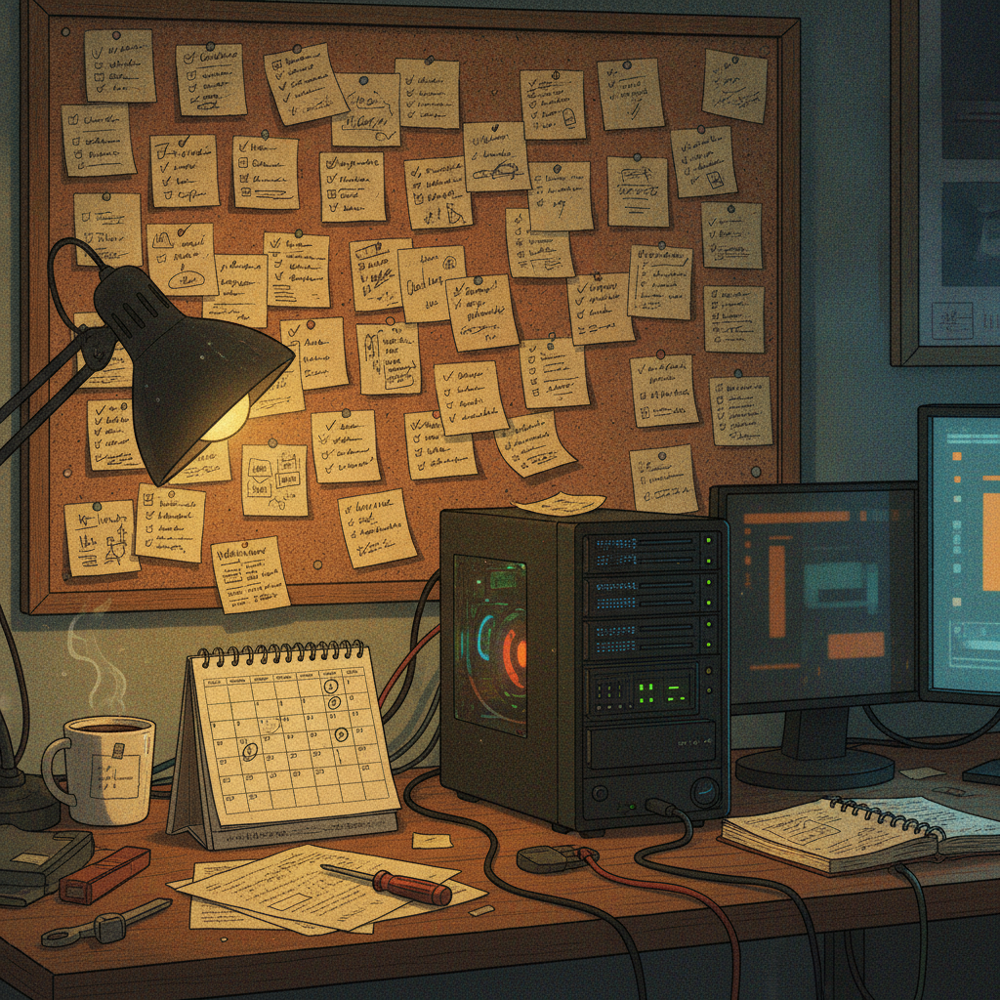

Why #TangGang's calm through this dip caught my attention
I scrolled past a lot of noise this week before this one stopped me. Not because it had a chart or a number attached to it. Because it was the opposite of that. It was just a vibe check, and the vibe was calm.
What was bookmarked
@OrangeGooey posted about the mood inside #TangGang (the community tag a lot of Chia folks use) during the current price dip. The gist: people in this crowd have seen dips before, so a red chart does not rattle them. What is different this time, according to the post, is that the tech behind it is real and the builders keep showing up every day regardless of price. The post ends with a prediction that there will eventually be a moment where people who were not paying attention realize they are behind, with no easy way to catch up.
There is no link, chart, or data attached. It is a sentiment post, and I am treating it as exactly that.

Why it matters
Price is the easiest thing to point a camera at, and the hardest thing to actually learn anything from. What is genuinely useful to watch in any ecosystem, crypto or otherwise, is whether the people building things keep building when nobody is cheering. That is a much better health signal than a candle on a chart, and it is also much harder to fake for long. A community where the daily grind does not change either way is doing something different.
This connects to a theme I keep coming back to: small teams and communities doing real work tend to outlast the noise cycle, as long as the work is actually real and not just declared to be real.
The practical breakdown
What it is: A community sentiment post, not a product update, tool, or technical claim. No tokenomics, no roadmap, no numbers to verify.
Who it helps: Anyone trying to gauge whether a project or community is healthy beyond the price chart. It is a reminder to look past the ticker.
What is missing: The post is a feeling, not evidence. "Builders show up daily" is a claim worth checking against something concrete, commit activity, project launches, events, actual shipped work, not just vibes on X.
What I would test first: If I wanted to know if this holds up, I would go look at what has actually shipped in the Chia space over the last few weeks regardless of price. Real activity is checkable. A feeling is not, and that is fine, it just means the feeling is a starting point, not a conclusion.
Rick's take
I like this post because it names something I have felt myself. I have been around Chia long enough to have sat through more than one quiet, unglamorous stretch, and the thing that always struck me is that the people who actually care about the tech do not disappear when the chart is red. They are the same people posting about a farm setup, a plot migration, or a new tool the next morning like nothing happened. That is a real pattern, and it is one of the reasons I stay optimistic about this space specifically. The one thing I would gently add is that "unbothered" and "right" are not the same word, calm does not automatically mean correct, but calm paired with people actually showing up and doing the work is a much better sign than calm paired with silence. From what I have seen, this community tends to be the first kind.
What to watch next
I would not read this as a prediction about price, and neither should you, the post is not making one either, really. What is worth watching is the boring stuff: are projects still shipping, are events still happening, are new builders still showing up, during the next quiet stretch and the one after that. That is the actual test of whether "the tech is real and the builders show up daily" holds up over time, not one post, but a pattern across several cycles.
Source and links
Source: X post by @OrangeGooey, https://x.com/i/web/status/2076803261785346140, retrieved on 2026-07-13.
External references: none included in the source post.